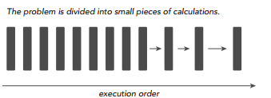
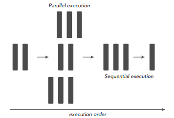
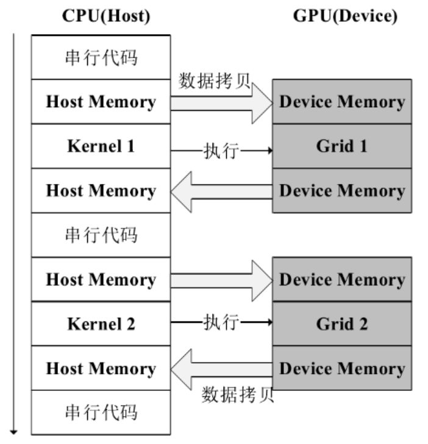
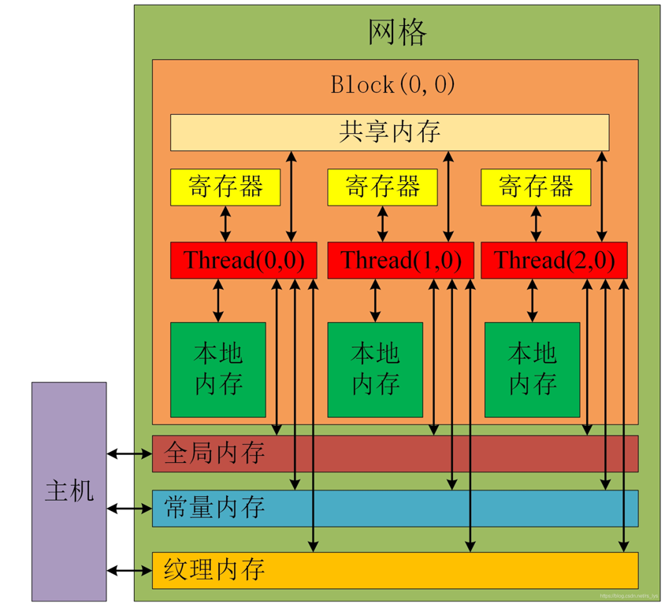

〇、 什么是 CUDA
CUDA（Compute Unified Device Architecture），是显卡厂商 NVIDIA 推出的运算平台。 CUDA™是一种由NVIDIA推出的通用 并行计算 架构，该架构使 GPU 架构，该架构使 GPU 能够解决复杂的计算问题。 它包含了CUDA指令集架构（ISA）以及GPU内部的并行计算引擎。 开发人员可以使用C语言来为CUDA™架构编写程序，所编写出的程序可以在支持CUDA™的处理器上以超高性能运行。
一、 引言
1.1 GPU 的诞生
CPU的计算速度无法满足需求，大部分坐标处理工作及光影特效需要 CPU 亲自完成，占用太多运算时间，造成整体画面不能流畅的表现出来。随着时间的推移，CPU 进行各种光影计算的速度变得越来越无法满足游戏开发商的需求，更多特效的应用也几乎榨干了 CPU 的性能，因此，矛盾产生了，GPU 应运而生。
1.2 GPU 概述
GPU（Graphics Processing Unit）是一种特殊类型的处理器，具有数百或数千个内核，可并行运行大量计算。GPU是一种专门在PC，游戏机，手机等设备上上运行绘图运算工作的微处理器。虽然GPU在游戏中以3D渲染而闻名，但它们对运行分析、深度学习和机器学习算法尤其有用。GPU允许某些计算比传统CPU上运行相同的计算速度快10倍至100倍。
1.3 CUDA 产生
GPU的高效在于可以高度并行处理。 以两个向量相加为例，CPU可能采取循环处理，每个循环对一个分量做加法。GPU则可以开多个线程，每个线程同时对一个分量做加法。CPU加法的速度一般快于GPU，但因为GPU可以同时开大量线程并行跑，因此更加高效。
为了降低GPU程序的开发难度，NVIDIA推出了 CUDA（Compute Unified Device Architecture，统一计算设备架构）这一编程模型。
1.4 CPU 和 GPU 模型对比
1.4.1 CPU 架构

CPU（Central Processing Unit, 中央处理器）：CPU的结构主要包括运算器（ALU, Arithmetic and Logic Unit）、控制单元（CU, Control Unit）、寄存器（Register）、高速缓存器（Cache）等。简单来说就是计算单元，控制单元，存储单元。计算能力是CPU的很小的一部分功能。
ALU— 运算单元Control— 控制单元Cache— 高速缓存（CPU和内存之间的中介桥梁），进行高速数据交换的存储器DRAM— 进行短暂存储的存储器，易失性存储器（电源开启时数据存在，断开电源数据消失）
可以看出 CPU是基于低延迟设计 的。因为它有特别大的缓存空间可以降低延时，可以保存较多数据在缓存里面，当需要访问的这些数据时，只要在之前访问过的，现在直接在缓存里面取即可。
此外，CPU具有复杂的控制单元。例如当程序含有多个分支的时候，它可以通过提供分支预测的能力来降低延时。再比如在数据转发时，当一些指令依赖前面的指令结果时，数据转发的逻辑控制单元决定这些指令在pipeline中的位置并且尽可能快的转发一个指令的结果给后续的指令。这些动作需要很多的对比电路单元和转发电路单元。
因为CPU的架构中需要大量的空间去放置存储单元和控制单元，相比之下计算单元只占据了很小的一部分，所以它在大规模并行计算能力上极受限制，而更擅长于逻辑控制。
1.4.2 GPU 架构

GPU的结构里有大量的ALU（计算单元）单元和很少的Cache（缓存）。
GPU的Cache不是像CPU那样保存后面需要访问的数据的，它是为thread（线程）提供服务的。如果有很多线程需要访问同一个相同的数据，缓存会合并这些访问，然后再去访问dram（因为需要访问的数据保存在dram中而不是cache里面），获取数据后cache会转发这个数据给对应的线程，这个时候Cache是作为数据转发的角色。但是由于需要访问dram，自然会带来延时的问题。
GPU的工作大部分都计算量大，但没什么技术含量，而且要重复很多很多次。也就是说，GPU是用很多简单的计算单元去完成大量的计算任务，纯粹的人海战术。所以GPU的计算特点就是超长的流水线和并行计算。显然，GPU是基于高吞吐量设计的。
1.5 串行计算和并行计算
串行计算可以看成是将某个任务分解成一系列小任务，把这些小任务一一完成。在串行计算时，我们的想法就是让处理器每次处理一个计算任务，处理完一个计算任务后再计算下一个任务，直到所有小任务都完成了，那么这个大的程序任务也就完成了。CPU 的每个核心自身能力极强，处理任务上非常强悍，但是他核心少，所以 CPU 特别擅长串行计算。

当我们可以利用多核处理器同时处理多个任务时，为了进一步加快大任务的计算速度，我们可以把一些小任务分配到不同的处理器上进行同时计算，最后再将这些结果进行整合，完成一次任务计算。GPU的每个核心的计算能力不如CPU，但是它核心非常多，可同时处理多个计算任务，所以GPU擅长并行计算。

所以，要加快程序的运行速度，可以先分析程序中哪些部分是强耦合的，哪些部分是相对独立的，对于强耦合的部分可以使用串行计算，而对于相对独立的部分，则可以充分利用多核处理器的优势进一步加速我们的计算任务，使用并行计算加快计算速度。因此，利用串行+并行的编程思路即可完成一次高性能计算，也就是充分利用CPU和GPU的优势来使程序性能得到优化。
二、 CUDA 模型
2.1 CUDA 程序执行过程
典型的CUDA程序实现流程如下：
- 把数据从
CPU内存拷贝到GPU内存； - 调用核函数对存储在
GPU内存中的数据进行操作； - 将数据从
GPU内存传送到CPU内存。

2.2 CUDA 线程模型
kernel在device上执行时实际上是启动很多线程，一个kernel所启动的所有线程称为一个网格（grid），同一个网格上的线程共享相同的全局内存空间，grid是线程结构的第一层次，而网格又可以分为很多线程块（block），一个线程块里面包含很多线程，这是第二个层次。

理想的主机端的串行代码只负责上一个kernel函数的清理和为下一个kernel函数进行准备，这样可以充分发挥GPU的高效运算能力，减少内存和显存之间传递数据的开销。但是在实践中一般无法将所有的计算任务交给设备端处理，主机端的串行代码中还应包含一些并行度较小的计算任务。
2.3 CUDA 内存模型
CUDA编程模型本质是从GPU架构中抽象出的一个内存层次结构，通过在CUDA上进行开发可以对GPU不同的内存层次进行处理。由于LRC码在编解码的过程中会进行数据的分组分割，需要对原始数据块进行存储处理等操作，为了加快LRC码的编解码性能，可以将分割分组后的数据存储到GPU的不同内存层次中去，这一点可以利用CUDA编程实现。因此，对于CUDA模型中不同的内存层次结构的了解很有必要。
在设备端全局内存类似于CPU的系统内存，具有存储空间大但是内存带宽低、时延较高的特点，而共享内存则类似于CPU的缓存，具有的存储空间比线程自带的寄存器空间要大且拥有高内存带宽以及低时延。其中，GPU的共享内存可以由CUDA_C的内核直接控制。

上图即为 CUDA 内存模型，前文已经介绍过 Grid - Block - Thread 的线程结构，在内存模型中，一个 Grid 中的所有 Block 的线程可以共享访问 全局内存 、 常量内存 、 纹理内存 的数据，在一个 Block 中，所有线程 Thread 可以共享访问 本地内存 （共享内存）的数据。
三、 CUDA 核函数
假如我们要计算 10000 个 0 到 9 的随机数立方和，用 C 写应该是这样：
1 | // 1.c |
那么我们如何让这个工作在显卡上完成呢？首先第一件事很显而易见，这些数字不能放在内存里了，而是要复制到GPU的显存上。
前文已经介绍过，在 CUDA的架构下，一个程序分为两个部份：host端和 device端。Host端是指在 CPU上执行的部份，而 device端则是在显示芯片上执行的部份。Device端的程序又称为 kernel。通常 host端程序会将数据准备好后，复制到显卡的内存中，再由显示芯片执行 device端程序，完成后再由 host端程序将结果从显卡的内存中取回。
我们需要把产生的数据复制到Device端的RAM，才能在显卡上完成计算，因此我们首先开辟一块合适的显存，然后把随机数从内存复制进去。
1 | /*把数据复制到显卡内存中*/ |
cudaMalloc和 cudaMemcpy的用法和一般的 malloc及 memcpy类似，不过 cudaMemcpy则多出一个参数，指示复制内存的方向。在这里因为是从主内存复制到显卡内存，所以使用 cudaMemcpyHostToDevice。如果是从显卡内存到主内存，则使用cudaMemcpyDeviceToHost。
完成了从内存到显存的数据拷贝之后，我们接下来就要在显卡上完成计算了。
CUDA 核函数就是要写在显示芯片上执行的程序。在 CUDA中，在函数前面加上__global__ 表示这个函式是要在显示芯片上执行的,所以我们只要在正常函数之前加上一个__global__就行了：
1 | __global__ static void getRes(int* dat, int* res) { |
可以看到，在 C 源代码中该接口是以 int 型返回的，但是这里的返回值是 void ，需要注意，所有在 device 端执行的代码，即前缀包含 __global__ 的接口必须以 void 返回，也就是无返回值，所有需要返回的数据都要在参数列表中以参数的形式传入和修改。
写好核函数之后需要让CUDA执行这个函数。在 CUDA中，要执行一个核函数，使用以下的语法：
1 | functionName<<<blockNum, threadNum, shared_memory_size>>>(args...); |
例如，我们令 block 数量为 1 ，每个 block 中的 thread 数量为 1，不使用共享内存，则调用核函数的接口的方式为：
1 | getRes<<<1, 1, 0>>>(gpudata, result); |
很显然，令 block 数量为 1 ，每个 block 中的 thread 数量为 1，不使用共享内存，这样的话就是单纯的让单个线程完成计算，没有涉及到多线程并行计算。计算完了，千万别忘了还要把结果从显示芯片复制回主内存上，然后释放掉内存。
1 | int sum; |
完整程序：
1 |
|
四、 核函数运行参数
上一个部分介绍了核函数的一种调用形式：
1 | functionName<<<blockNum, threadNum, shared_memory_size>>>(args...); |
其中 <<< >>> 标识了核函数的启动方式。实际上，当我们定义了核函数，并将其标识为 __global__ 后：
1 | __global__ void kernel(param1, ...) {} |
在主机端调用时应采用如下的形式：
1 | kernel<<<Dg, Db, Ns, S>>>(param1, ...); |
其中：
Dg是dim3类型的，dim3即基于unsigned int定义的矢量类型，实质上是3个unsigned int组成的结构体，用来定义grid的维度和尺寸，即grid每行有Dg.x个block，每列有Dg.y个block，高度为Dg.z；Db是dim3类型的，用来定义block的维度和尺寸，即block每行有Db.x个thread，每列有Db.y个thread，高度为Db.z；Ns：size_t类型，可缺省，默认为0。 用于设置每个block除了静态分配的共享内存外，最多能动态分配的共享内存大小，单位为byte。0表示不需要动态分配；S：cudaStream_t类型，可缺省，默认为0。 表示该核函数位于哪个流。
前面已经介绍了 GPU 的线程结构，结合之前的线程结构更容易理解。
4.1 核函数举例之矢量相加
4.1.1 一维 grid ，一维 block
1 | __global__ void addKernel_G1_B1(int* ret, const int* a, const int* b) { |
4.1.2 一维 grid ，二维 block
1 | __global__ void addKernel_G1_B2(int* ret, const int* a, const int* b) { |
4.1.3 一维 grid ，三维 block
1 | __global__ void addKernel_G1_B2(int* ret, const int* a, const int* b) { |
4.1.4 二维 grid ，一维 block
1 | __global__ void addKernel_G2_B1(int* ret, const int* a, const int* b) { |
4.1.5 二维 grid ，二维 block
1 | __global__ void addKernel_G2_B2(int* ret, const int* a, const int* b) { |
4.1.6 二维 grid ，三维 block
1 | __global__ void addKernel_G2_B3(int* ret, const int* a, const int* b) { |
4.1.7 三维 grid ，一维 block
1 | __global__ void addKernel_G3_B1(int* ret, const int* a, const int* b) { |
4.1.8 三维 grid ，二维 block
1 | __global__ void addKernel_G3_B2(int* ret, const int* a, const int* b) { |
4.1.9 三维 grid ，三维 block
1 | __global__ void addKernel_G3_B3(int* ret, const int* a, const int* b) { |
4.2 任务调度
以上面的 addKernel_G1_B1 为例：
1 | __global__ void addKernel_G1_B1(int* ret, const int* a, const int* b) { |
当 size > 1024 时，矢量会过长，因为一个 block 能容纳的线程数至多为 1024 。于是我们可以采用多个线程块来解决线程不足的问题。 假如我们设定每个线程块包含 128 个线程，则需要的线程块的数量为 size / 128 。 为了避免不能整除带来的问题，我们可以稍微多开一点 (size + 127) / 128 ，但需要增加判断条件来避免越界。
1 | __global__ void addKernel(int* ret, const int* a, const int* b, const int size) { |
如果数据量大于 Block_num * Thread_num，那么我们就无法为每个分量单独分配一个线程了。 不过，一个简单的解决办法就是在核函数中增加循环。
1 | __global__ void addKernel(int* ret, const int* a, const int* b, const int size) |
4.3 线程同步
同一个 Block 中的线程可以访问一块共享内存。由于共享内存缓冲区驻留在物理 GPU 上（片上内存），而不是 GPU 之外的系统内存（片外内存）上，因此访问共享内存的延迟要远远低于访问普通缓冲区的延迟。
不同 Block 之间存在隔离，如果我们需要不同线程之间进行通信，那么还需要考虑线程同步的问题。比如线程1 将某个数值写入内存，然后线程 2 会对该数值进行一些操作，那么显然必须等 1 完成之后 2 才可以操作，如果没有同步，程序将会因进入“竞态条件”而产生意想不到的错误。
举个栗子：
求向量点积，如四维向量的点积为： \[
(x_1, x_2, x_3, x_4)\cdot (y_1, y_2, y_3, y_4)=x_1y_1 + x_2y_2 + x_3y_3 + x_4y_4
\] 现在假设进行点积运算的两个向量的长度为 33 * 1024 ，使用 32 个线程块，每个线程块使用 256 个线程。
Step 1. 申请共享内存
首先申请共享内存，例如申请一个数组 cache ：
1 | __shared__ int cache[threadsPerBlock]; |
我们需要明白的是，一旦这样声明数组，就会创建与线程块的数量相同的数组 cache ，即每个线程块都会对应一个这样的数组 cache 。我们都知道，共享内存是用于同一个线程块内的线程之间交流的，不同线程块之间是无法通过共享内存进行交流的。另外，数组 cache 的大小是每个线程块中线程的个数，即线程块的大小。
Step 2. 分析每个线程的工作
如果向量长度不是特别长(假设大小等于总线程个数)的话，每个线程只需要工作一次，即计算两个元素的积并保存在中间变量 temp 里。但是实际计算过程中由于向量长度过长，一次计算可能会计算不完，每个线程需要多次计算才能完成所有工作，因此 temp 保存的值可能为多个元素乘积之和。
假设数组大小为 16 ，线程总数为 4 。此时一次并行是无法完成工作的，所以需要多次并行，即每个线程需要做四次工作才可完成计算。
那么相应的代码如下：
1 | int tid = threadIdx.x + blockIdx.x * blockDim.x; |
如果你已经理解了上面这个过程，那么你也应该会明白每个线程块移动的步长为什么是总线程的个数了，即 tid += blockDim.x * gridDim.x 这段代码。
Step 3. 多线程协同
要让多线程协同工作，就需要使用到共享内存。每个线程将 tmp 的值保存到每个线程块的共享内存( shared memory )中，即数组 cache 中：
1 | cache[cacheIdx] = tmp; |
这样每个线程块中对应的数组 cache 保存的就是每个线程的计算结果。为了节省带宽，这里又采用了并行计算中常用的归约算法，来计算数组中所有值之和，并保存在第一个元素( cache[0] )内。这样每个线程就通过共享内存( shared memory )进行数据交流了。具体代码如下所示：
1 | //归约算法将每个线程块上的cache数组归约为一个值cache[0]，最终保存在数组c里 |
Step 4. 保存结果
现在每个线程块的计算结果已经保存到每个共享数组 cache 的第一个元素 cache[0] 中，这样可以大大节省带宽。下面就需要将这些归约结果保存到全局内存( global memory )中。
观察核函数你会发现有一个传入参数——数组 ret 。这个数组是位于全局内存中，每次使用线程块中线程 ID 为 0 的线程来将每个线程块的归约结果保存到该数组中，注意这里每个线程块中的结果保存到数组 ret 中与之相对应的位置，即 c[blockIdx.x]。
1 | if (cacheIdx == 0) { |
Step 5. 完整代码
1 |
|